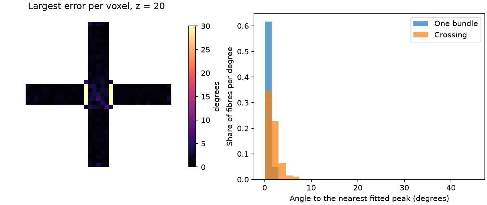

Note
Go to the end to download the full example code.
Check a pipeline against the ground truth#
This example simulates the crossing phantom that ships with Larmor, runs a short pipeline on the saved images, and measures the angle between each true fibre direction and the nearest fitted peak. The pipeline estimates a white matter response from the data, fits fibre orientation distributions (FODs) and finds their peaks. The example prints the error in the voxels with one bundle and in those where the two bundles cross, and draws it.
A simulation knows what a fit should find. Besides the images, save_simulation
writes the true fibre directions of every voxel, in the layout of the peaks that
lar peaks writes, so the output of a processing pipeline can be compared with
them voxel by voxel.
import tempfile
import numpy as np
from matplotlib.figure import Figure
from larmor.io import load_dwi, load_volume
from larmor.sd import SDModel, build_response_functions, find_peaks
from larmor.simulation import example_phantom, save_simulation, simulate
Simulating the phantom#
The crossing phantom has two straight bundles of different tissues that cross
at 90 degrees, one along x and one along y, on a 40 x 40 x 40 grid of 1 mm
voxels. Its scan has two b = 0 volumes and 32 directions at each of b = 1000 and
2000 s/mm^2. The SNR is 30 and the seed fixes the noise. This is what
lar simulate crossing sim --snr 30 --seed 1 does from the command line.
loaded = example_phantom("crossing")
assert loaded.protocol is not None # the phantom file holds its scan
result = simulate(loaded.phantom, loaded.protocol, snr=30, seed=1)
The pipeline#
The pipeline reads the saved files, as it would read a scan. It estimates the white matter response from the voxels of highest FA in the mask of the bundles, fits the FODs with the default method, and finds up to three peaks per voxel. The true directions are read from the same folder.
with tempfile.TemporaryDirectory() as folder:
files = save_simulation(result, folder)
dwi, gtab = load_dwi(files.dwi[0], files.bvals, files.bvecs)
assert files.bundle_mask is not None
mask = load_volume(files.bundle_mask).data > 0
truth = load_volume(files.peaks).data
responses = build_response_functions(dwi, gtab, mask)
fit = SDModel(responses, lmax=8).fit(dwi, gtab, mask=mask)
peaks = find_peaks(fit.fods[0], mask, relative_threshold=fit.peak_relative_threshold)
The angular error#
In each voxel of the mask, every true direction is matched with the fitted peak closest to it. The angle between them, from 0 to 90 degrees, is the error for that fibre; a sign flip is no error, since a fibre has no front or back. A fibre whose nearest peak lies more than 45 degrees away counts as missed, because the fit found no peak for it, and is left out of the error statistics. A voxel is a crossing when the ground truth has two peaks there.
MISSED = 45.0
true_dirs = truth.reshape(*truth.shape[:3], -1, 3)
true_dirs = true_dirs / np.linalg.norm(true_dirs, axis=-1, keepdims=True)
fitted = np.nan_to_num(peaks.directions) # NaN where a voxel has fewer peaks
cosines = np.abs(np.einsum("xyztc,xyzpc->xyztp", np.nan_to_num(true_dirs), fitted))
errors = np.degrees(np.arccos(np.clip(cosines.max(axis=-1), 0.0, 1.0)))
errors[~np.isfinite(true_dirs[..., 0])] = np.nan # no true fibre there
num_true = np.isfinite(true_dirs[..., 0]).sum(axis=-1)
groups = {"One bundle": mask & (num_true == 1), "Crossing": mask & (num_true == 2)}
matched = {}
for name, voxels in groups.items():
fibres = errors[voxels][np.isfinite(errors[voxels])]
matched[name] = fibres[fibres <= MISSED]
print(
f"{name}: {voxels.sum()} voxels, {fibres.size} fibres, "
f"{fibres.size - matched[name].size} missed; error median "
f"{np.median(matched[name]):.1f}, 95th percentile "
f"{np.percentile(matched[name], 95):.1f} degrees"
)
One bundle: 1424 voxels, 1424 fibres, 0 missed; error median 0.7, 95th percentile 1.6 degrees
Crossing: 215 voxels, 430 fibres, 30 missed; error median 1.4, 95th percentile 4.3 degrees
The figure#
On the left, the plane z = 20, which holds both bundles, coloured by the largest error of each voxel, a missed fibre included. The errors are largest at the edges of the crossing, where the second bundle fills only part of the voxel. On the right, the errors of the fibres that were found, in the voxels with one bundle and in the crossing. The figure is drawn with matplotlib.
worst = np.where(mask, np.nan_to_num(errors, nan=0.0).max(axis=-1), np.nan)
figure = Figure(figsize=(9, 3.8), layout="constrained")
left, right = figure.subplots(1, 2, width_ratios=[1, 1.3])
shown = left.imshow(worst[:, :, 20].T, origin="lower", cmap="magma", vmin=0, vmax=30)
left.set_title("Largest error per voxel, z = 20")
left.set_axis_off()
figure.colorbar(shown, ax=left, label="degrees", shrink=0.85)
bins = np.arange(0, MISSED + 1, 1.5)
for name, values in matched.items():
right.hist(values, bins=bins, density=True, alpha=0.7, label=name)
right.set_xlabel("Angle to the nearest fitted peak (degrees)")
right.set_ylabel("Share of fibres per degree")
right.legend()
figure.savefig("pipeline_ground_truth.png", dpi=150)
